Research & Academic Grants
Research projects, academic development, innovation and research training.
ViewA professional platform for research projects, grant proposals and creative eBook novels.
Explore ResearchProfessional academic and creative services.
Research project development for diploma, degree, master's and other academic levels.
Explore research topics by field.
This research examines how educational technology influences student performance, engagement and learning outcomes. It explores the use of digital learning platforms, interactive learning tools and other technologies in modern education. The study also considers challenges related to access, teacher preparedness and effective technology integration.
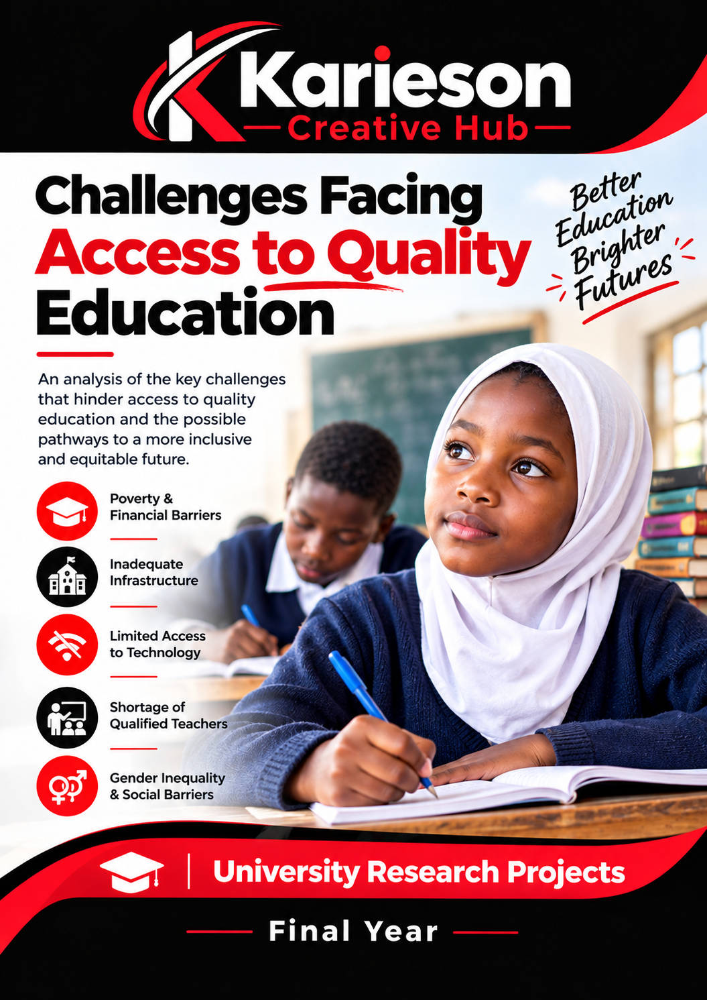
This research explores the major challenges that affect access to quality education. It examines factors such as poverty, inadequate learning facilities, geographical barriers, limited educational resources and social inequalities. The study also considers practical approaches for improving educational access and creating more inclusive learning opportunities.
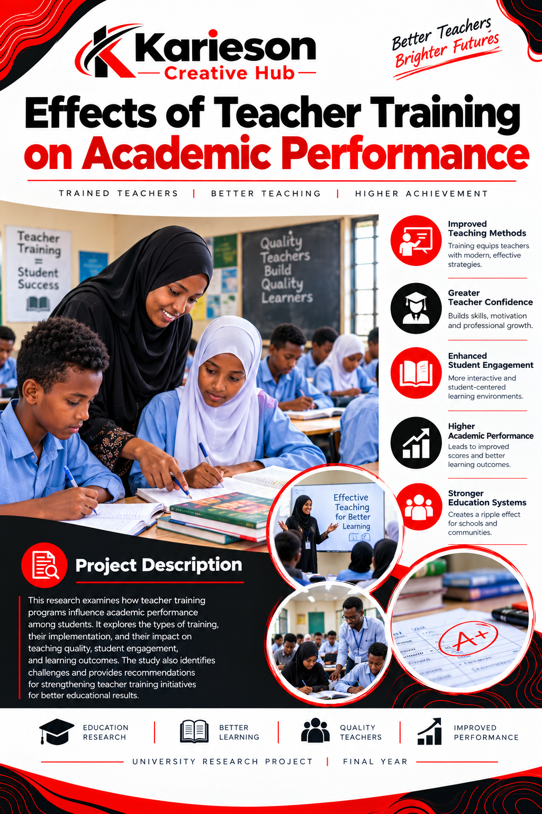
This research investigates how teacher training and professional development influence teaching effectiveness and student academic performance. It examines teaching methods, classroom management, professional skills and the importance of continuous teacher development.
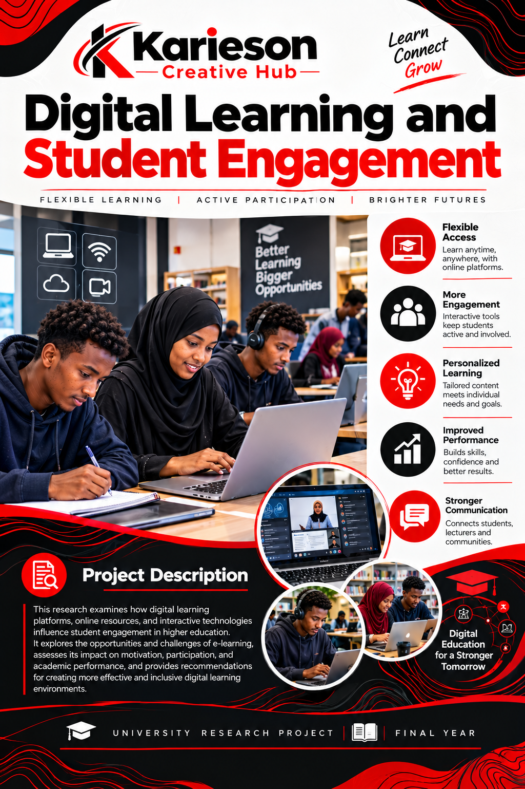
This research examines how digital learning tools and online educational platforms influence student participation and engagement. It explores the benefits and challenges of digital learning and considers how technology can support meaningful educational experiences.
This research examines the role of artificial intelligence in improving business operations, decision-making, innovation and competitiveness. It explores opportunities and challenges associated with the adoption of AI in modern businesses.
This research explores how information and communication technologies are transforming teaching and learning. It examines digital tools, access to information and the challenges involved in integrating ICT into education.
This study examines awareness of online security, privacy and responsible digital behaviour among young people. It explores common cybersecurity challenges and approaches for improving awareness of safe and responsible digital practices.

This research investigates how small businesses can use digital technologies to improve efficiency, customer service, marketing and business growth. It considers opportunities for businesses to adapt to changing digital markets.
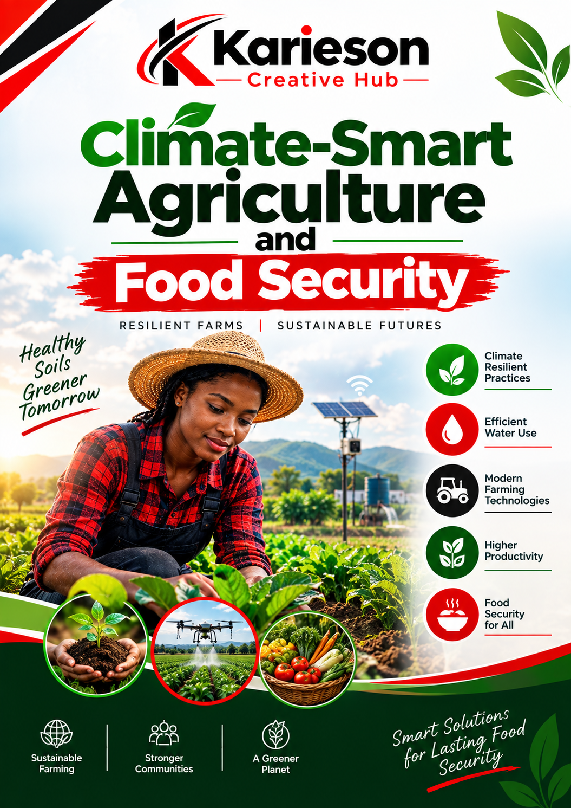
This research examines climate-smart agricultural practices and their potential contribution to food security, resilience and sustainable agricultural production. It explores approaches that can help farmers respond to changing climate conditions.
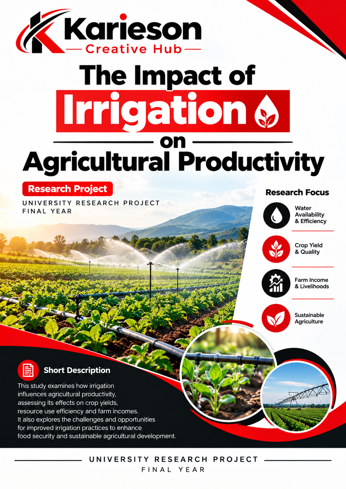
This study examines how irrigation can influence agricultural productivity, crop production and farmer livelihoods, particularly in areas affected by unreliable rainfall. It also considers the role of efficient water management in agricultural development.
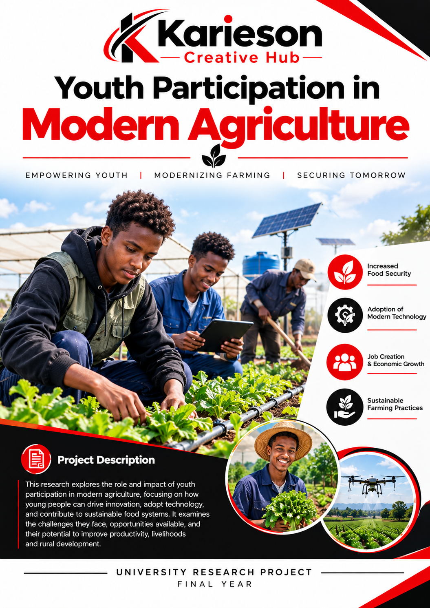
This research explores opportunities and barriers affecting youth participation in modern agriculture, entrepreneurship and agricultural innovation. It examines ways to encourage young people to participate in productive and sustainable agricultural activities.
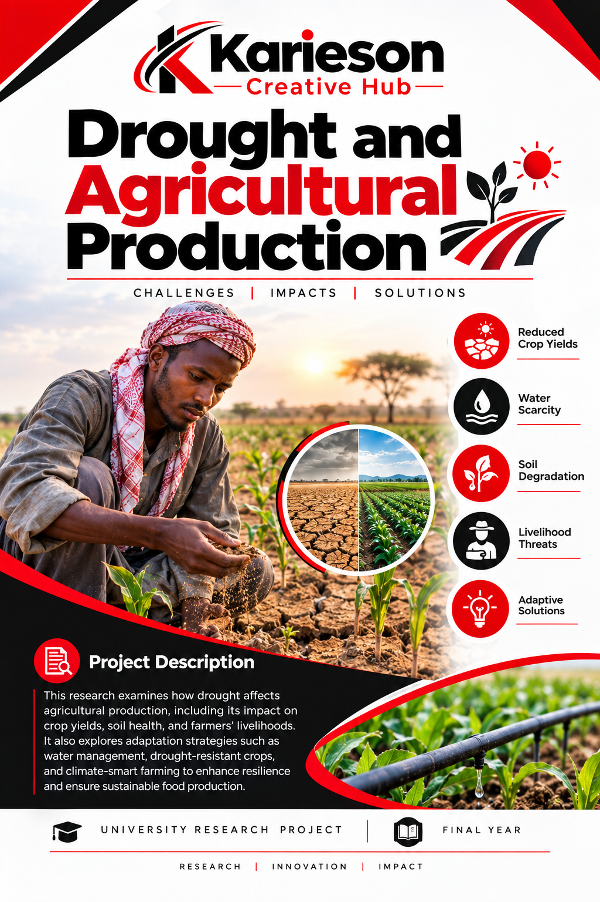
This research examines the effects of drought on agricultural production and explores strategies that farmers and communities can use to strengthen resilience, protect livelihoods and improve food security.

This research examines factors affecting access to healthcare services in rural communities, including distance, availability of facilities, resources and healthcare personnel. It explores possible approaches for improving access to essential healthcare services.

This research explores community-based approaches to health promotion and disease prevention. It examines the role of health awareness, preventive practices and community participation in improving public health outcomes.

This research examines the relationship between nutrition, healthy lifestyles and public health. It considers factors that influence community nutrition outcomes and explores approaches for supporting healthier communities.

This study explores how digital technologies can support healthcare delivery, communication, information management and access to services. It considers the potential benefits and challenges of digital solutions in healthcare.
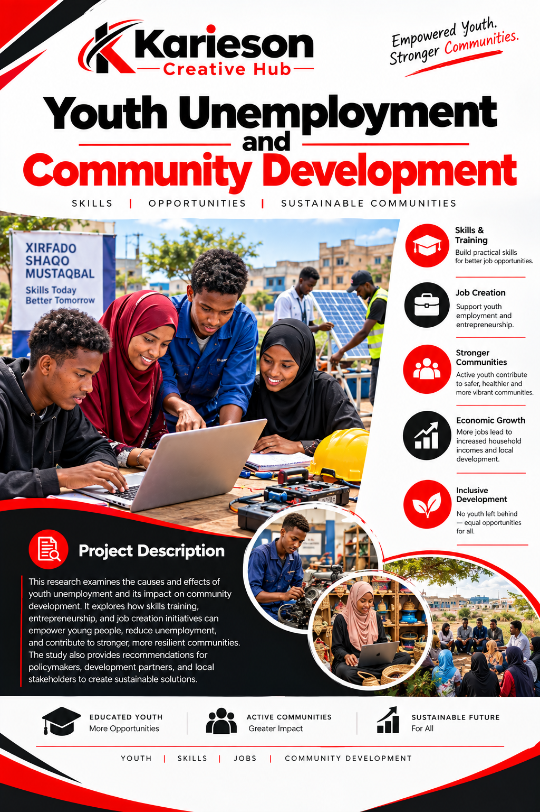
This research examines the relationship between youth unemployment, livelihoods and community development. It explores approaches for expanding employment opportunities and supporting young people to participate in community development.
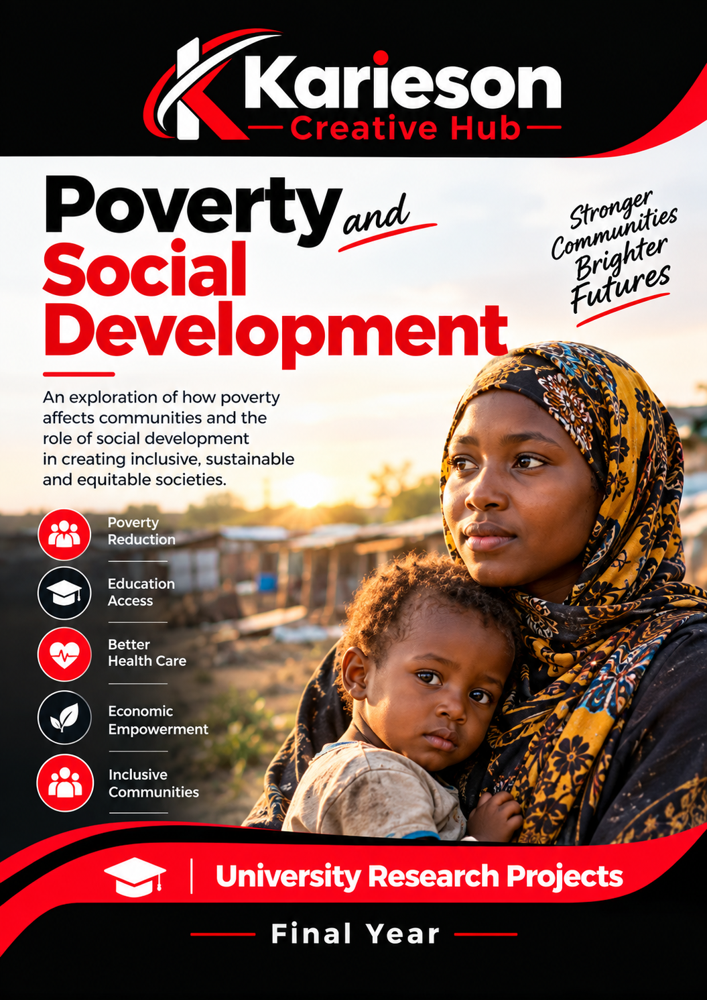
This research explores the causes and effects of poverty and examines strategies that can contribute to inclusive social and economic development. It considers factors that influence household and community wellbeing.
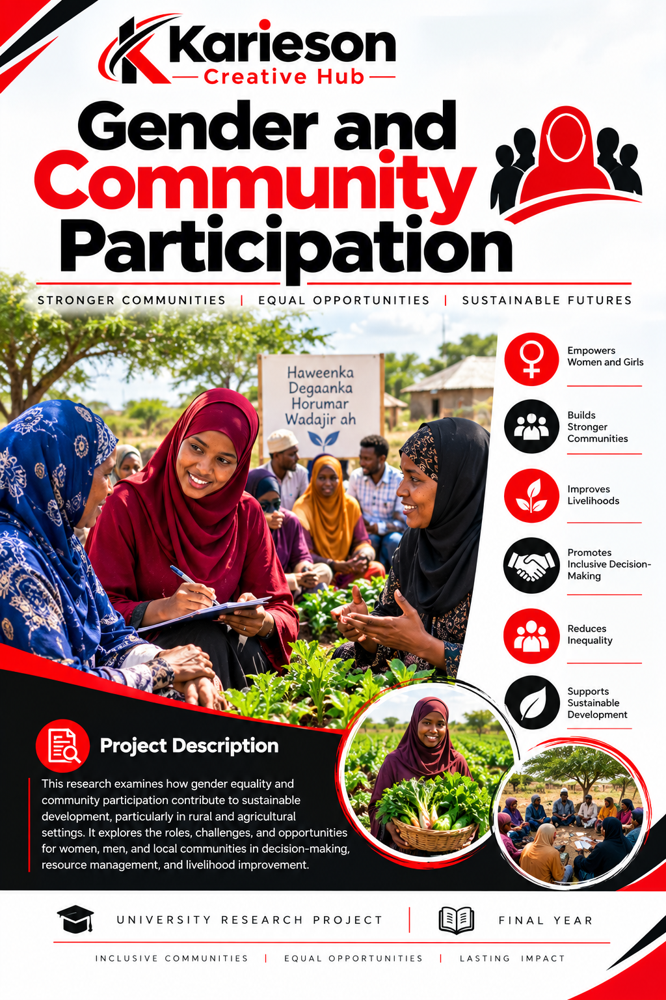
This research examines participation in community development and considers factors that influence inclusive involvement in local decision-making, community programmes and development activities.
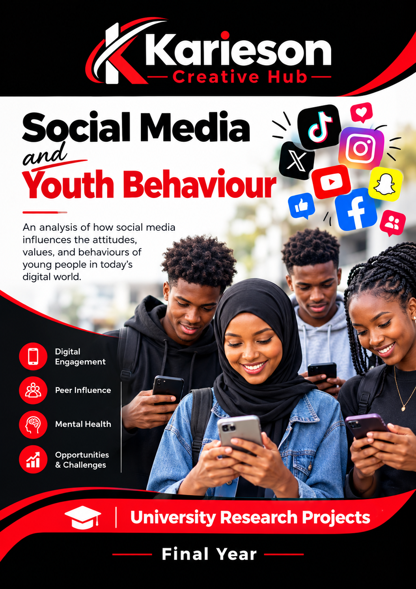
This study examines how social media use can influence communication, interaction and behaviour among young people. It considers both opportunities and challenges associated with social media use.
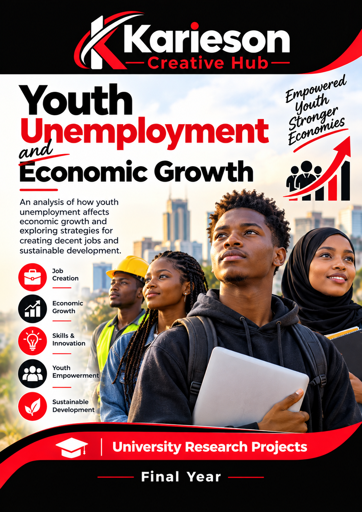
This research examines how youth unemployment affects economic growth and explores policies and opportunities that can support youth employment, entrepreneurship and economic participation.
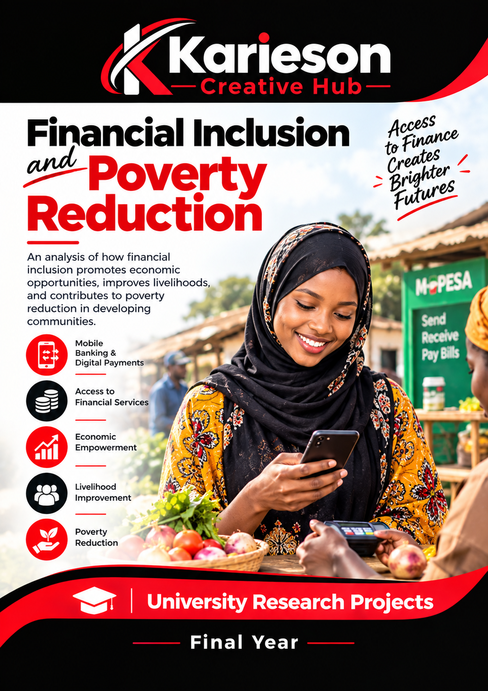
This research explores how access to financial services can support household economic opportunities, entrepreneurship and poverty reduction. It considers the role of financial inclusion in strengthening economic participation.

This research examines the contribution of small businesses to employment, household income, innovation and local economic development. It explores factors that can influence small-business growth and sustainability.

This research examines how changes in prices can affect household purchasing power, consumption patterns and economic wellbeing. It considers how inflation can influence different household needs and economic decisions.

This research examines the participation of young people in democratic processes and explores factors that influence civic engagement, political awareness and participation in public affairs.

This research examines principles of good governance and their relationship with effective, accountable and responsive public service delivery. It explores factors that can contribute to better governance and improved public services.

This study examines the importance of elections in democratic development, political participation and representation. It considers how credible electoral processes can contribute to democratic institutions and public participation.

This research explores the relationship between political leadership, community priorities and local development. It examines how leadership can influence community programmes and development outcomes.

This research examines how climate change can affect community livelihoods and explores approaches for strengthening resilience, adaptation and sustainable development in vulnerable communities.

This research explores sustainable approaches to managing water resources and the importance of responsible water use for communities, agriculture and ecosystems.

This research examines drought-related environmental challenges and explores conservation approaches that can support ecosystem resilience, sustainable resource use and community adaptation.

This research examines waste management practices and their role in protecting the environment and promoting healthier communities. It considers approaches for improving waste handling and environmental awareness.

This research explores how youth entrepreneurship can contribute to employment creation, innovation, income generation and local economic development. It examines opportunities and challenges affecting young entrepreneurs.

This research examines marketing strategies that small businesses can use to attract customers, improve visibility and strengthen competitiveness. It considers traditional and digital approaches to reaching target customers.

This study examines how innovation can help businesses improve products, services and processes. It explores how innovative approaches can support competitiveness, efficiency and long-term growth.

This research examines the role of small and medium enterprises in employment, innovation, income generation and economic development. It considers factors that influence SME growth and sustainability.

This research explores the contribution of renewable energy technologies to sustainable development, energy access and environmental protection. It examines opportunities for increasing the use of cleaner and sustainable energy solutions.

This research examines how water engineering solutions can support reliable water access, community development and sustainable resource management. It considers engineering approaches suitable for community needs.

This research explores approaches to developing infrastructure that supports economic growth, community needs and long-term environmental sustainability. It considers principles for resilient and responsible infrastructure planning.

This research examines factors influencing the adoption of solar energy in rural communities and explores its potential contribution to reliable, affordable and sustainable energy access.
Professional grant proposal development for organizations, community groups, businesses and innovative projects.
Research projects, academic development, innovation and research training.
ViewProjects supporting schools, higher education, digital learning and skills development.
ViewStartup, small business, innovation, employment and business expansion projects.
ViewCommunity empowerment, livelihoods, poverty reduction and social development.
ViewHealthcare access, disease prevention, community health and health education.
ViewAgricultural development, food security, agribusiness and climate-smart farming.
ViewClimate action, environmental conservation, renewable energy and sustainability.
ViewWriting, literature, film, music, cultural heritage and creative entrepreneurship.
ViewYouth employment, entrepreneurship, leadership, education and skills development.
ViewWomen's economic empowerment, entrepreneurship, leadership and equality.
ViewConstruction, renovation, equipment, technology and community infrastructure.
ViewSample proposal focused on climate resilience, agriculture and food security.
ViewSample proposal supporting youth businesses, employment and innovation.
ViewSample proposal for community empowerment, livelihoods and social development.
ViewExplore original digital novels and creative storytelling projects.
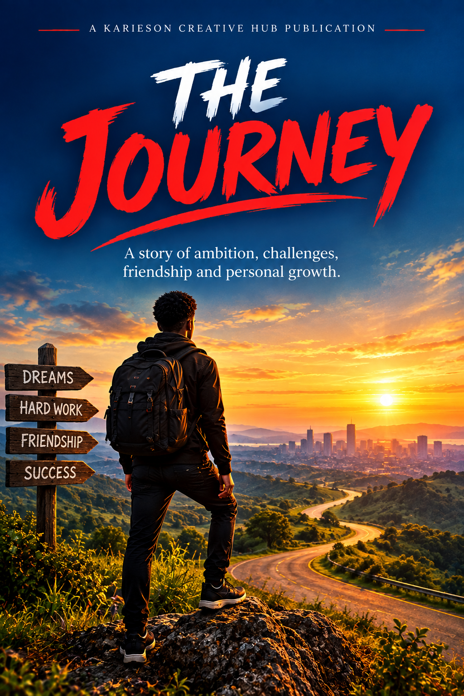
An inspirational story about ambition, friendship and personal growth. Follow a young dreamer through challenges, difficult choices and unexpected experiences as they discover the courage and resilience needed to pursue their dreams.
View eBook Buy NowA powerful inspirational story about dreams, determination and the courage to pursue new possibilities. Follow a young dreamer as challenges test their confidence, resilience and willingness to keep moving forward. Through unexpected experiences and meaningful friendships, the journey reveals that the greatest opportunities often lie beyond what we can see.
View eBook Buy Now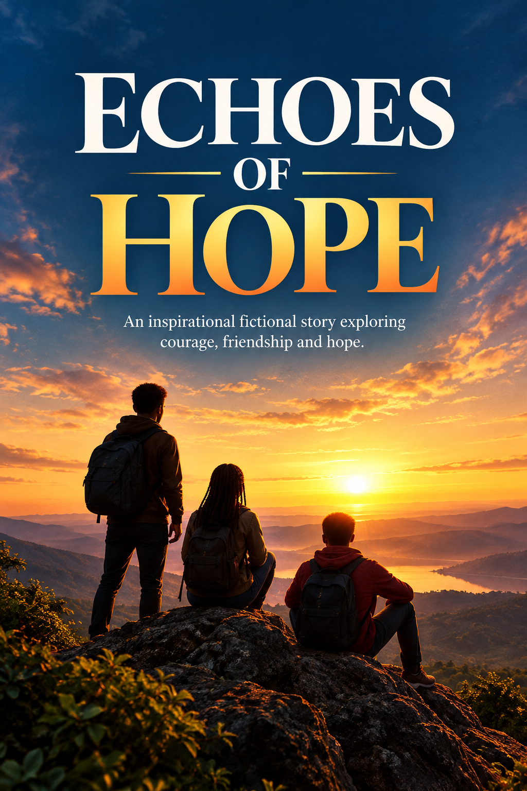
When three young friends face unexpected challenges that threaten their dreams, they must learn to stand together and believe in themselves. Their journey takes them through moments of doubt, difficult choices and new discoveries. Along the way, they discover the true meaning of courage, friendship and hope.
View eBook Buy Now